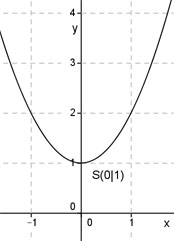

Aufgabe 13 Wie groß ist c, wenn eine Parabel der Form y = x2 + c durch den Punkt (0|1) geht? Punkt (0|1) bedeutet, x = 0 und y = 1. In y = x2 + c eingesetzt: 1 = 0 + c c = 1 Die gesuchte Funktion lautet: y = x2 + 1 Es ist eine nach oben geöffnete Normalparabel (Zahl vor dem x2 ist positiv und gleich 1). Sie ist symmetrisch zur y-Achse und hat ihren Scheitelpunkt, den tiefsten Punkt, bei S(0|1). 